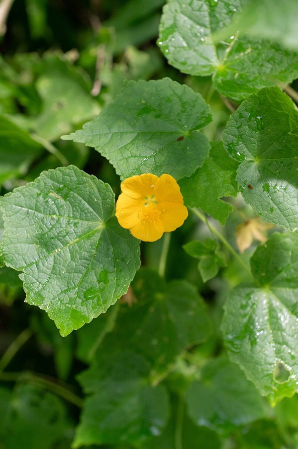

कंघीIndian Mallow
Abutilon indicum · Malvaceae · FLR-0218

- Scientific name वैज्ञानिक नाम
- Abutilon indicum (L.) Sweet
- Family कुल
- Malvaceae
- Hindi हिंदी
- कंघी
- Local names स्थानीय नाम
- kanghi, kangi, kanghee, indian mallow
- Status here यहाँ की स्थिति
- native
- Movement आवागमन
- Resident, here all year
- IUCN IUCN
- not evaluated
- Review समीक्षा
- audited and independently read
When to look कब देखें
Expected mainly in May, June, July, August, September, October, November, December. मुख्यतः मई, जून, जुलाई, अगस्त, सितंबर, अक्टूबर, नवंबर, दिसंबर में अपेक्षित।
Uses and possibilities उपयोग और संभावनाएँ
“Traditional medicine” means a documented traditional use, not a claim that it works. Nothing on this page is medical advice.
Drawn from the documented uses in the profile below, where each is labelled traditional, current or a research lead. All uses →
Tell it apart from इनसे अलग पहचानें
कंघी / Indian Mallow
Abutilon indicum (L.) Sweet — Malvaceae
कंघी — गर्मियों में खेतों के किनारे और गाँव की सड़कों पर उग आने वाला एक नरम, मुलायम बूटी। इसके पत्तों का आकार दिल जैसा, और फूल पीले रंग के होते हैं। गाँवों में इसे पारंपरिक दवाई के रूप में जाना जाता है — खाँसी, दस्त, और बवासीर में प्रयोग होता है। इसके तने के रेशों से सड़ियाँ और रस्सियाँ भी बनती हैं, हालाँकि यह अब दुर्लभ है।
Quick Identification त्वरित पहचान
| Feature | Description |
|---|---|
| Habit | Annual or short-lived perennial herb, 60–120 cm, soft-hairy throughout |
| Leaves | Alternate, cordate (heart-shaped), 5–15 cm long, densely soft-hairy, margins coarsely toothed |
| Flowers | Bright yellow, 5-petalled, 1–2 cm diameter, staminal column prominent, pollen bright orange-yellow |
| Fruit | Schizocarp (splits into segments), disc-shaped, 1–1.5 cm diameter, with radiating segments bearing small hooked spines |
| Stem | Herbaceous, soft-hairy, greenish; not woody |
| Hairs | Soft stellate (star-shaped) hairs throughout, giving a fuzzy appearance |
Field tip: A soft, fuzzy herb with heart-shaped leaves and bright yellow flowers. The seed capsule breaks apart into hooked segments (resembling a comb or kanghi), which stick to clothing and fur — hence the common name. Often grows as a minor weed in field margins and waste ground.
Morphology आकारिकी
| Measurement | Range |
|---|---|
| Plant height | 60–120 cm |
| Leaf length | 5–15 cm |
| Leaf width | 3–10 cm |
| Flower diameter | 1–2 cm |
| Fruit diameter | 1–1.5 cm |
| Fruit segments | 8–12 segments per fruit |
Habit: Annual or short-lived perennial herb, 60–120 cm tall; branching from base and along stem; herbaceous, not woody; soft-hairy throughout.
Leaves: Alternate, cordate (heart-shaped) to broadly ovate, 5–15 cm × 3–10 cm; both surfaces covered with fine, soft stellate (star-shaped) hairs, giving a velvety appearance; venation palmate; margin coarsely and irregularly toothed; apex acute to rounded; base deeply cordate; petiole 2–4 cm, hairy.
Inflorescence: Axillary, solitary or in small clusters; flowers borne singly or in pairs at leaf axils.
Flowers: Regular, pentamerous (5-parted); calyx 5-lobed, hairy; corolla 5 petals, bright yellow, 1–2 cm diameter, slightly overlapping; staminal column prominent, with numerous stamens; ovary superior, 8–12-celled.
Fruits (schizocarps): Disc-shaped, 1–1.5 cm diameter, initially green, becoming brown-grey at maturity. The fruit is a schizocarp that breaks apart into 8–12 distinct segments (mericarps). Each segment is rounded or slightly angled, bearing a small hooked spine or tubercle on the outer edge. The segments readily detach and cling to clothing, fur, and animal hooves.
Seeds: Small, blackish, 1–2 mm, flattened, present within each segment.
हिंदी: पत्तियाँ दिल जैसी, नरम बाल से ढकी। फूल पीले, सुंदर। फल 8–12 टुकड़ों में टूटता है, हर टुकड़े पर काँटा — कंघी की तरह।
Behaviour & Ecology व्यवहार और पारिस्थितिकी
Abutilon indicum is a warm-season herb that germinates in late spring (May–June) and grows vigorously through the monsoon and post-monsoon period. It is a pioneer of disturbed soils, waste ground, and cultivated field margins. The plant is drought-tolerant once established and thrives in well-drained and even degraded soils. It does not compete vigorously with taller vegetation but is effective at occupying open spaces.
The bright yellow flowers attract small bees, solitary wasps, and butterflies; pollination is entomophilous (insect-mediated). The plant produces copious pollen, visible as bright orange-yellow dust on the flowers. Self-pollination also occurs.
The schizocarp (fruit capsule) breaks apart at maturity into hooked segments that disperse mechanically via animal fur and human clothing. A single plant can produce 50–200 fruits in a season; each fruit yields 8–12 dispersal units. The dispersal mechanism is zoochorous (animal-mediated), and long-distance seed transport occurs via livestock and humans.
The soft hairs on the leaves may have allelopathic or defensive properties; herbivores preferentially browse young plants before hairs fully develop.
हिंदी: गर्मी में तेज़ी से बढ़ता है। पीले फूल कीड़ों को लुभाते हैं। फल की काँटेदार फलियाँ जानवरों के पैरों से चिपक जाती हैं। एक पौधा 50–200 फल दे सकता है।
Life Cycle / Phenology जीवन चक्र
- Germination: Late May–June (monsoon onset); temperature-dependent; germinates at 15–30 °C
- Vegetative growth: June–August; plant reaches full height by August
- Flowering: July–November; flowers produced progressively on new growth
- Fruit development: August–December; fruits mature and dry on the plant; segments disperse progressively
- Seed dispersal: September–January; mature fruits break apart; segments cling to animals and humans
- Death: Plant killed by sustained cold (December–January in eastern UP); some plants persist into February
- Seed bank: Seeds remain viable in soil for at least 2–3 years; germination requires warming
हिंदी: मई–जून: अंकुरण। जून–अगस्त: तेज़ी से बढ़ना। जुलाई–नवंबर: फूल। अगस्त–दिसंबर: फल पकना। सितंबर–जनवरी: बीज फैलना। दिसंबर–जनवरी: ठंड में मर जाता है।
Agricultural / Human Relevance कृषि और मानव संबंध
Traditional medicinal use: Abutilon indicum is a well-documented plant in traditional South Asian medicine (Ayurveda, Unani, and folk practice). Recorded uses include:
- Respiratory complaints: Root and leaf decoction traditionally taken for cough, asthma, and bronchitis. Some modern herbals list it as an expectorant.
- Gastrointestinal disorders: Used traditionally for diarrhoea, dysentery, and constipation. A mild astringency is reported in some older texts.
- Skin conditions: Leaf paste or poultice applied to wounds, boils, and inflammatory skin lesions in folk medicine.
- Piles (haemorrhoids): Mentioned in some Ayurvedic texts for internal haemorrhoids, used as a mild astringent.
These are traditional uses; no modern clinical trials support efficacy, and self-treatment is not advised.
Fibre and cordage: The stem contains a soft bast fibre that, when retted (water-soaked), can be processed into cordage, twine, and in historical contexts, fabric. However, the commercial cultivation for fibre has declined globally due to competition from synthetic materials and cotton. The practice persists only in isolated traditional contexts.
Weed status in fields: In cultivated areas, Abutilon indicum is a minor weed. It is readily suppressed by competitive crops and rarely causes economic damage. The main nuisance is the sticky fruit segments, which contaminate cotton and other textile crops if harvesting occurs during seed dispersal season.
Research direction (as a lead, not a result): The alkaloid and flavonoid profile of Indian Abutilon indicum populations remains understudied. Modern phytochemical analysis of root and leaf extracts could identify bioactive compounds and guide efficacy research. In vitro testing of aqueous and ethanolic extracts against common respiratory pathogens (Staphylococcus aureus, Streptococcus pneumoniae) and anthelmintic screening could provide a foundation for further investigation. The potential for the plant to be re-domesticated as a fibre source in agroforestry systems deserves economic and agronomic evaluation.
Caution - Not for self-medication: Traditional uses are documented but not clinically validated. Any respiratory, gastrointestinal, or skin condition should be evaluated by a healthcare provider. Do not attempt self-treatment with plant preparations without professional guidance.
हिंदी: पारंपरिक: खाँसी, दस्त, बवासीर में। रेशे: रस्सी बनती हैं (अब दुर्लभ)। खेतों में: मामूली खरपतवार। सावधानी: स्व-औषधि न करें।
Expected Locally स्थानीय रूप से अपेक्षित
Not a field record. Written from published accounts for eastern Uttar Pradesh. No confirmed local sighting yet — if you have seen it, that is what the atlas needs.
अभी तक स्थानीय पुष्टि नहीं। यह विवरण प्रकाशित स्रोतों से है, किसी अवलोकन से नहीं।
Abutilon indicum is to be expected in cultivated fields, waste ground, and village margins throughout Basti and eastern Uttar Pradesh, particularly during the warm season (May–November). The plant is most visible during and after the monsoon season when it is in flower and setting fruit. Look along field margins, roadside edges, and in areas of disturbed soil. The distinctive heart-shaped, soft-hairy leaves and bright yellow flowers are easily recognized. The hooked fruit segments are conspicuous and sticky — easily spotted on clothing and animal fur. The first local record would be a photograph with date and location, sent to the atlas.
Distribution वितरण
Global range: Native to tropical Asia, particularly the Indian subcontinent and Southeast Asia; now found in tropical and subtropical regions worldwide.
In India: Distributed across much of the country from sea level to about 1,800 m elevation; common in wastelands, cultivated areas, and village margins throughout the Indo-Gangetic plains.
In Uttar Pradesh: Present in most districts; particularly common in the warmer, eastern and southern regions.
In Basti district / eastern UP: Expected as a common warm-season weed in cultivated fields, wastelands, and village surroundings; likely abundant but not formally surveyed. More common in sandy and well-drained soils.
Research Questions शोध प्रश्न
Anyone can investigate these | कोई भी इन प्रश्नों की जाँच कर सकता है
- How many fruits does one plant produce in a season? / एक पौधा एक मौसम में कितने फल देता है? — Count all fruits (ripe and developing) on one mature plant; repeat for 5 plants; calculate average.
- How far do the fruit segments travel on a cow or buffalo? / फल की फलियाँ एक गाय पर कितनी दूर जाती हैं? — Attach a marked segment to a grazing animal's leg; track how far the animal walks before the segment is dislodged.
- Does the leaf extract have antimicrobial activity? / क्या पत्तों की निकली हुई चीज़ से कीटाणु मरते हैं? — Crush fresh leaves; extract in water or alcohol; test on common soil bacteria using a disk-diffusion method.
- What is the traditional use in your village? / आपके गाँव में इसका क्या उपयोग है? — Interview 3–5 elders; document any historical or current medicinal or other uses.
- Does soil amended with kanghi compost support crop growth? / क्या कंघी की खाद से फसल अच्छी बढ़ती है? — Make compost from kanghi biomass; use it to amend soil in a crop plot; compare growth vs. unamended control plot.
Similar Species मिलती-जुलती प्रजातियाँ
| Species | How to tell apart | हिंदी |
|---|---|---|
| Abutilon asiaticum | Leaves more deeply lobed; flowers smaller; fruit disc smoother; more common in drier regions | पत्तियाँ ज़्यादा कटी, सूखे क्षेत्र में |
| Sida acuta | Leaves narrower, more lanceolate; flowers smaller (0.5–0.8 cm); fruit a disc with 5 segments, no hooks | पत्तियाँ सँकरी, फूल छोटे, फल 5 टुकड़ों में |
| Hibiscus species | Larger flowers (2–4 cm); leaves usually deeply lobed; fruit a capsule, not a schizocarp; woody shrub | बड़े फूल, झाड़ी जैसा |
Field rule: Soft, hairy herb + heart-shaped leaves + bright yellow flowers + disc-shaped fruit breaking into hooked segments = Abutilon indicum. The bright yellow pollen is diagnostic.
Taxonomy & Classification वर्गीकरण
Original description. Abutilon indicum was first described as Sida indica by Carl Linnaeus in 1753 (Species Plantarum 1: 963). It was later transferred to Abutilon by Robert Sweet in 1826. The genus name Abutilon is derived from the Arabic abu tillon (father of the cotton-like plant). The specific epithet indicum refers to India, the plant's center of diversity.
Subspecies. Monotypic — no subspecies are currently recognised, though several botanical varieties have been described.
Family and order placement. Belongs to the order Malvales, family Malvaceae (mallow family), a large family of herbs, shrubs, and trees comprising about 250 genera and 4,200 species globally. The family is known for the production of soft bast fibres and mucilaginous compounds.
Phylogenetic notes. Abutilon comprises about 150 species, mostly tropical and subtropical. Molecular studies support A. indicum as a well-defined species within the genus, closely related to A. asiaticum and A. mauritianum.
IUCN status rationale. This species has not been formally assessed by the IUCN Red List. As a widespread, common weed with stable and expanding populations and no documented threats, a formal assessment would likely yield Least Concern or Not Evaluated.
Photo Gallery फोटो गैलरी
Photos needed आवश्यक फोटो
- [ ] Full plant in field or waste ground (पूरा पौधा — खेत में)
- [ ] Heart-shaped leaves close-up showing soft hairs (पत्तियाँ — दिल जैसी, नरम बाल)
- [ ] Bright yellow flower detail (फूल — पीला, सुंदर)
- [ ] Mature fruit disc showing 8–12 hooked segments (फल — काँटेदार टुकड़े)
- [ ] Segments stuck to cloth or animal fur (फलियाँ कपड़े या जानवर के बाल पर)
Atlas Connections संबंधित प्रजातियाँ
- Devil's Claw — both have sticky fruit segments that disperse via animals; both warm-season weeds (FLR-0214)
- Touch-me-not — shares disturbed-soil habitat; both medicinal weeds (FLR-0089)
- Prickly Chaff Flower — shares roadside and weed habit; both pioneer species (FLR-0016)
References संदर्भ
- Linnaeus, C. (1753). Species Plantarum 2: 685, as Sida indica. [original description]; combination Abutilon indicum (L.) Sweet (1826), Hortus Britannicus 1: 54.
- Hooker, J.D. (1874). Flora of British India, Vol. 1: 331–332. L. Reeve & Co., London.
- Kirtikar, K.R. & Basu, B.D. (1935). Indian Medicinal Plants, Vol. 1: 434–436. Lalit Mohan Basu, Calcutta.
- Botanical Survey of India (BSI) — Flora of Uttar Pradesh (unpublished compilations for eastern districts).
- Robyns, A. (1994). Malvaceae (including Bombacaceae, Burseraceae, Sterculiaceae, Tiliaceae). In: Polhill, R.M. (ed.), Flora of Tropical East Africa. Crown Agents for Oversea Governments, London.
- GBIF Occurrence Data — Abutilon indicum (L.) Sweet, India (2026). GBIF taxon key: 2775905.
Source file: species/flora/weeds/kanghi.md